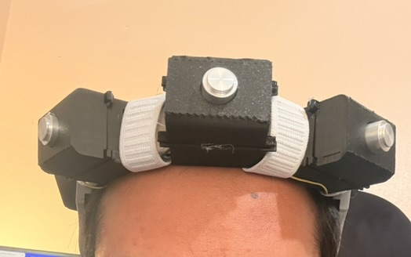
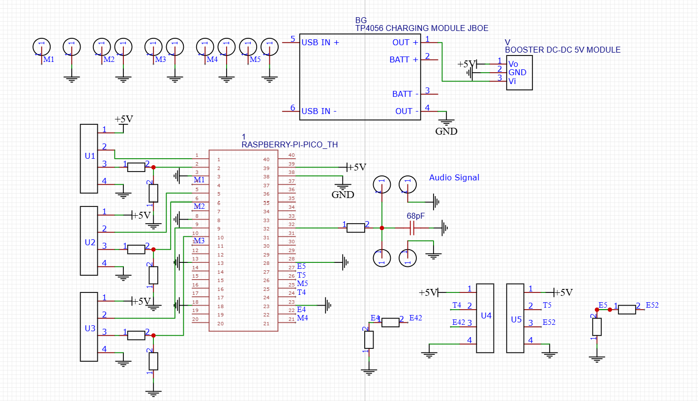
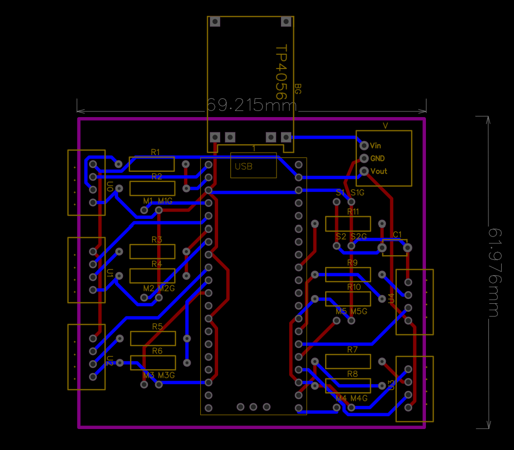
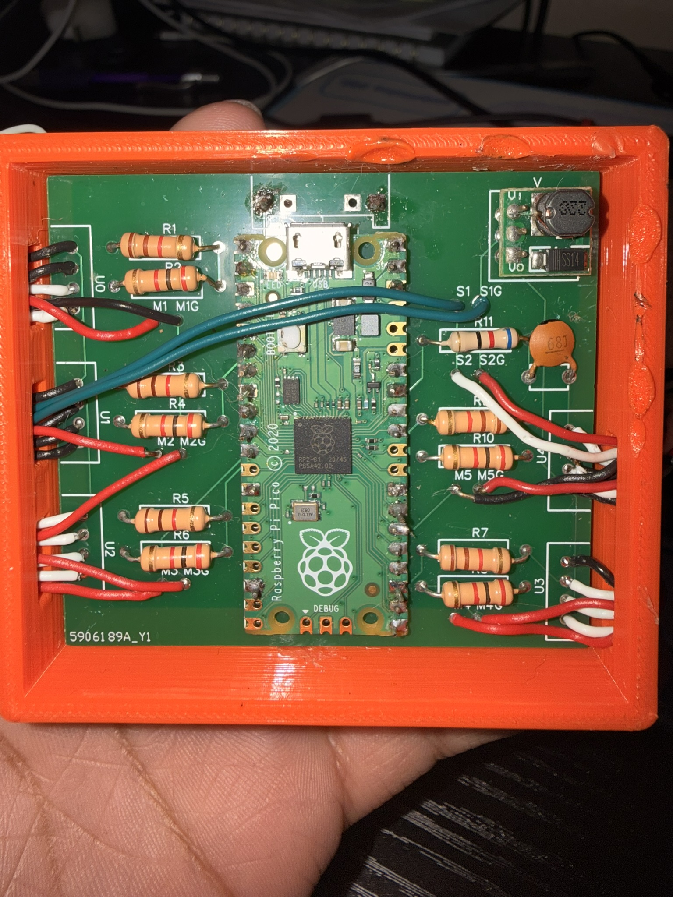
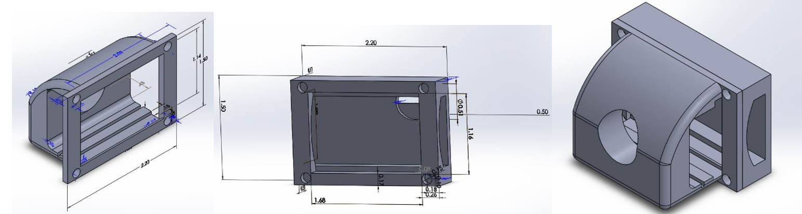
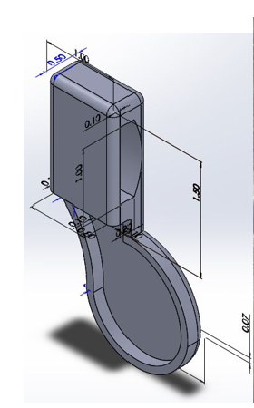
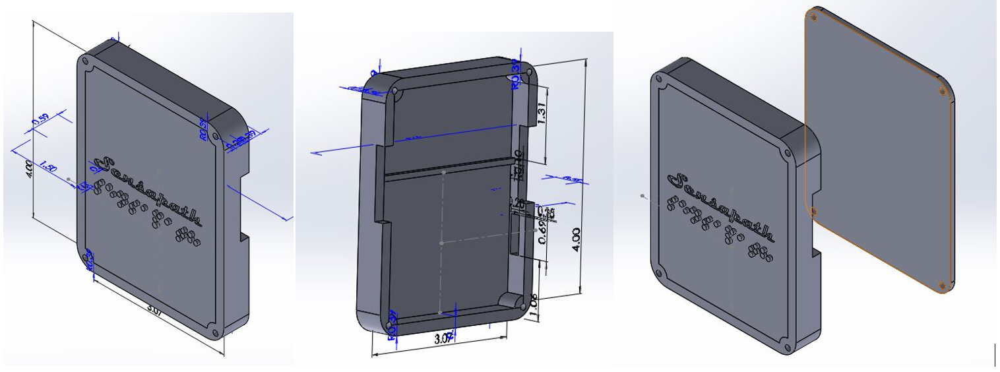

Embedded accessibility system
SensaPath: 360 Proximity Awareness System for the Visually Impaired
A functional wearable prototype that combines five ultrasonic sensing zones, directional vibration feedback, and spoken distance cues around an RP2040 controller.
Overview
Directional awareness without relying on vision
SensaPath explores a wearable way to communicate nearby obstacle movement. Five AJ-SR04M ultrasonic modules cover separate directions around the user. Each zone maps to a coin vibration motor, allowing the feedback location to communicate where an obstacle is approaching.
The front sensor also drives spoken distance feedback through two compact speakers. The prototype integrates sensing, haptics, audio, battery power, a custom PCB, and printed enclosures into one system.
Sense
Trigger five ultrasonic channels sequentially and capture echo pulse timing with GPIO interrupts.
Filter
Validate measurements from 2 to 400 cm and apply a three-sample median filter.
Interpret
Compare filtered readings with hysteresis to detect meaningful approaching movement.
Signal
Activate the matching vibration zone and announce front distance from one through ten feet.
Firmware
Event-driven control on both RP2040 cores
Core 0 manages sensor acquisition, filtering, timeout recovery, and motor policy. Core 1 waits for audio commands and streams stored speech samples through an interrupt-driven PWM output.
- Non-blocking trigger, echo, timeout, and cooldown state machine
- Sequential acquisition to reduce sensor crosstalk
- Fixed-memory data paths with no dynamic allocation
- Compile-time UART and USB diagnostic logging
- Raspberry Pi Pico SDK, CMake, and C11
Hardware
Integrated sensing, feedback, and portable power
- ControllerRaspberry Pi Pico / RP2040
- Sensing5 AJ-SR04M ultrasonic modules
- Haptics5 coin vibration motors, 10 mm x 2 mm
- Audio2 Gikfun round micro speakers
- PowerLithium battery and TP4056 charger
- Regulation5 V DC-DC boost converter
- InterconnectCustom two-layer PCB
- PackagingCustom printed sensor and electronics mounts
Electronics design
From schematic to assembled prototype
The custom board centralizes the Pico, five sensor interfaces, five motor outputs, audio path, charger, and 5 V supply within a compact enclosure footprint.



Mechanical integration
Wearable housings designed around the electronics
I collaborated with two mechanical engineering teammates as they designed the printed sensor modules, speaker holder, and main electronics enclosure around wiring, service access, and the wearable arrangement.



Team contributions
My work: firmware and electronics
I authored the full embedded codebase and designed the complete electrical system and PCB. I also led electronic integration, bring-up, and functional testing.
Collaborative work: mechanical integration
Two mechanical engineering teammates led the printed-part design, component ordering, fabrication, and soldering support. We collaborated on enclosure and mounting decisions to align the mechanical design with the electronics.
Explore the firmware
Review the C source, pin assignments, firmware architecture, and Pico SDK build instructions on GitHub.
Open 360System on GitHub